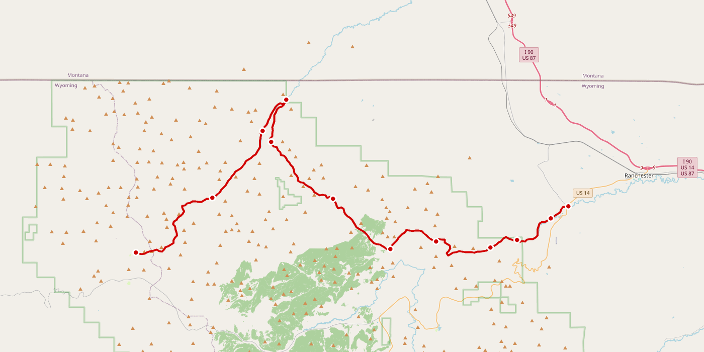
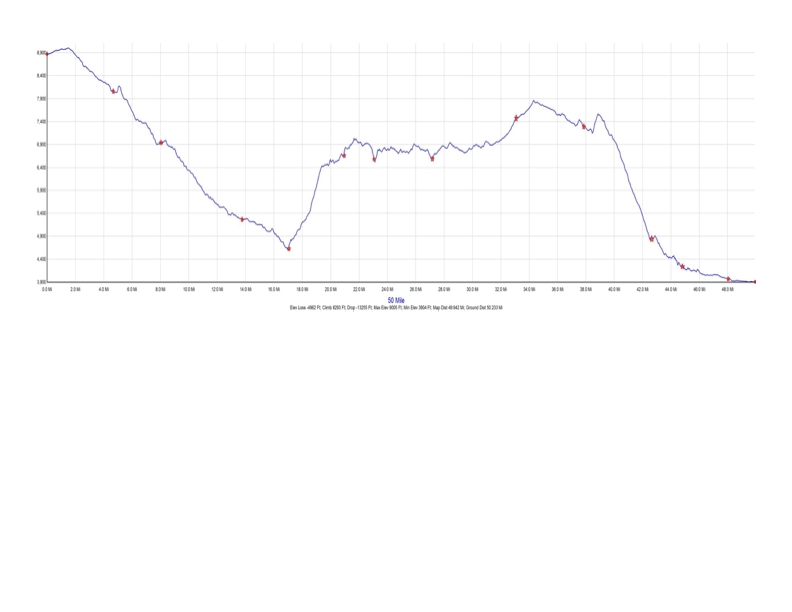

| Station | Mi | Elev | Aid | Cut-Off | ↑ | ↓ |
|---|
↑ gain / ↓ loss from previous station
Tap to expand. Checks save automatically.
Tap to expand. Checks save automatically.

↗ Open Interactive Map in Google Maps
Pinch to zoom · Total: ~9,000 ft gain / ~12,000 ft loss
Race day Jun 20 · Forecast fetched Jun 18 · Open-Meteo · MDT (UTC−6)
✅ Dry Fork cutoff now clear — T-storm shifts to 4 PM (was 2–3 PM). ⚠️ New hazard: 25 mph gusts at Tongue River TH 6 PM. Finish DRY at 8 PM. Recheck Jun 19.
45°F
Start 5 AM
78°F
Valley peak
69%
Storm peak
| Time | Zone | Temp | ⛈️% | Wind / Gust | Notes |
|---|---|---|---|---|---|
| 5:00 AM | HIGH | 45°F | 1% | 4 / 4 mph | Overcast — bring layers |
| 6:00 AM | HIGH | 47°F | 1% | 4 / 5 mph | Overcast on ridge |
| 7:00 AM | HIGH | 52°F | 8% | 5 / 7 mph | Overcast, low clouds |
| 8:00 AM | MID | 62°F | 8% | 3 / 9 mph | Calm, overcast |
| 9:00 AM | MID | 66°F | 8% | 2 / 8 mph | Good conditions |
| 10:00 AM | MID | 69°F | 8% | 4 / 10 mph | Cathedral Rock cutoff |
| 11:00 AM | VAL | 68°F | 3% | 6 / 4 mph | Overcast — valley no clear break |
| 12:00 PM | MID | 64°F | 8% | 1 / 14 mph | ⚠️ Drizzle starts; gusty on climb |
| 1:00 PM | MID | 67°F | 69% | 5 / 12 mph | ⚠️ Storm building — prob jumps to 69% |
| 2:00 PM | MID | 68°F | 69% | 9 / 7 mph | ⚠️ Overcast — Kearn's, storm approaching |
| 3:00 PM | MID | 66°F | 69% | 10 / 11 mph | ✅ No storm at Dry Fork cutoff |
| 4:00 PM | MID | 60°F | 69% | 6 / 6 mph | ⚡ T-STORM (code 95) — Upper Sheep Cr. cutoff |
| 5:00 PM | MID | ~60°F | 69% | 10 / 10 mph | ⚠️ Post-storm descent — drizzle persists |
| 6:00 PM | VAL | 71°F | 58% | 10 / 25 mph | ⚠️ GUST SPIKE 25 mph — Tongue River TH cutoff |
| 7:00 PM | VAL | 72°F | 70% | 6 / 12 mph | Gusts easing — Home Stretch |
| 8:00 PM | VAL | 67°F | 70% | 6 / 9 mph | 🏁 ✅ Finish DRY — overcast, no rain |
⚡ T-storm (code 95) MID 4 PM — 1–2 hrs later than Jun 17 · Dry Fork cutoff (3 PM) now clear ✅ · 25 mph gusts at Tongue River TH 6 PM ⚠️ · Finish DRY at 8 PM ✅